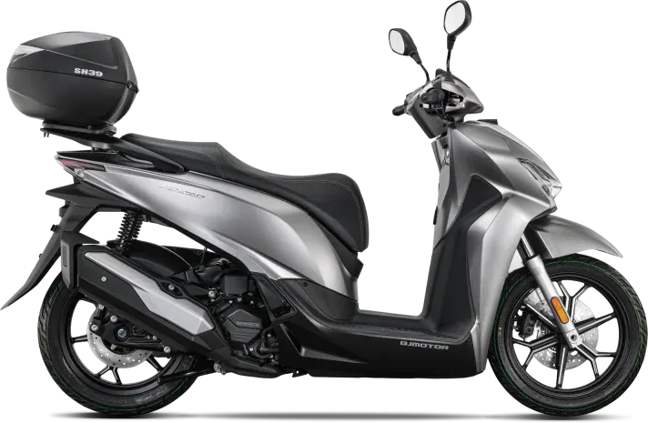
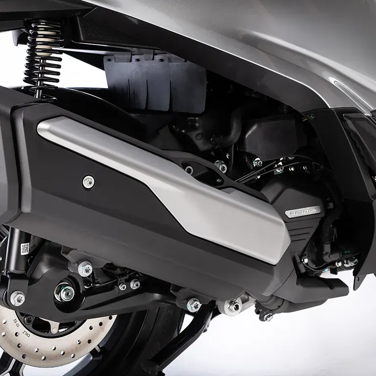
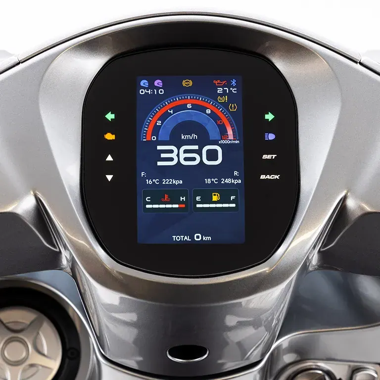
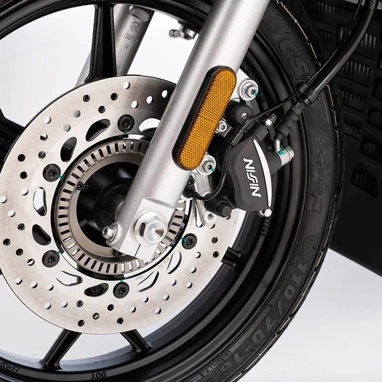

QJ Motor
FORT 350 EVO
A2 350 cc · 22,1 kW · Scooter
Propuesta de OpsPilot para Expomoto Córdoba, en revisión. No es la web oficial: expomotocordoba.es




Motor monocilíndrico, 4T SOHC de 4 válvulas, 29,9 CV, 330 c.c · Suspensión trasera doble amortiguador con precarga de muelle · Embrague automático centrífugo · ABS de doble canal · TCS desconectable · Dashboard TFT 5″ táctil con mirroring · Full LED · Keyless · Color plata y negro.
El motor monocilíndrico SOHC a 4 tiempos de 330 c.c con una respuesta ágil de 29,9 CV (22 kW) a 7.500 rpm de potencia y 33,5 Nm a 5.500 rpm, disponibles a bajas revoluciones.
Pantalla incorporada TFT 5″ en formato vertical y botones táctiles con conectividad mirroring, para que conectes tu smartphone directamente a la pantalla.
ABS SAFE SF20D de doble canal para una frenada segura y estable en cualquier situación, con control de tracción (TCS) desconectable para adaptar la respuesta de la moto a tu forma de conducir.
Simplifica cada arranque: con un simple gesto, desbloquea el asiento, el tapón de combustible y activa el contacto, sin necesidad de llaves.